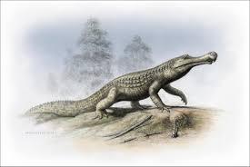

Саркозух — гигантский древний крокодил, который выглядел как настоящий речной монстр. Эта бронированная махина длиной до 12 метров скрывалась под водой и ждала момента для атаки. Один рывок — и огромная пасть захлопывалась на добыче с чудовищной силой. Некоторые ученые считают, что Саркозух мог утаскивать под воду даже динозавров. Представь: подходишь к реке, делаешь шаг к воде… и из глубины на тебя вылетает живой танк с зубами размером с ножи.
Он охотился у воды и ему все равно кто ты, потребитель бургеров или качок на тремболоне, он был способен утащить даже динозавра. Абсолютный кошмар мелового периода.